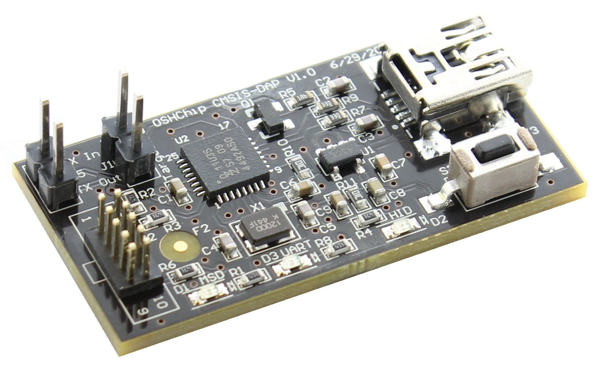

OSHChip's Programmer and Debugger

Programming
OSHChip contains 256 K Bytes of
on‑chip Flash memory which is used for your application program,
the optional radio protocol software stack (such as Bluetooth Low
Energy (BLE) or Gazell) and also for non-volatile storage. After you
have written your application program and compiled it successfully,
your next step it to program the on‑chip Flash memory with the
compiled and linked image. This is usually a .HEX file.
OSHChip_CMSIS_DAP V1.0 is the tool for the job.
Debugging
With many alternative processor boards, in particular the various Arduino and mbed devices, that would be the end of the story: Download your program, and if it doesn’t work, your available debug tools are pretty much limited to flashing a LED, or using printf() to display the value of some variables at one point in the program, at one particular time. OSHChip has a much more sophisticated solution thanks to the extensive debug support built into the Keil IDE and the CMSIS-DAP functionality provided by OSHChip_CMSIS_DAP V1.0 . With this combination, you get best in class capabilities such as break points, examining and changing memory, single stepping through your code, and even breakpoints when a variable is read or written or matches a specific value. Once you have used this type of debugging functionality, you won’t want to go back to just flashing a LED or using printf().
Programming and Debugging cable and adapter
OSHChip V1.0 has a small 4 pin connector on the top side that is used for programming the Flash memory, and can also be used for debugging. The 4 pins are the minimal pins needed to implement the ARM Cortex SWD interface. SWD is used on ARM processors from many companies, and so OSHChip_CMSIS_DAP V1.0 can be used with products other than OSHChip. The SWD standard specifies a 10 pin (2 by 5) connector with pin spacing in X and Y of 0.050” (1.27mm). To convert from the 2 by 5 layout on the OSHChip_CMSIS_DAP V1.0 to the 2 by 2 layout on the OSHChip, a small adapter OSHChip SWD 2x2 Adapter is available.
A cable and an adapter are shipped with each OSHChip_CMSIS_DAP_V1.0
Services
OSHChip_CMSIS_DAP_V1.0 connects to a host computer over a USB 2.0 interface and provides 3 services:
-
USB to CMSIS-DAP programming with a SWD connection to the target. Use this with the Keil IDE. This should be able to program any processor that the Keil IDE supports (there are hundreds) that can be programmed via SWD. There is also support for debugging with GCC’s GDB debugger, via pyOCD. Although not yet tested, OSHChip_CMSIS_DAP V1.0 should also be compatible with OpenOCD.
-
USB MSD (Mass Storage Device), shows up like a USB memory stick/drive, named MBED or OSHChip 1.0. You can drag and drop .HEX files to this drive, and it will convert the file to the appropriate SWD pin wiggling and program a nRF51822 which is the processor on OSHChip_V1.0. This drag and drop interface only works with nRF51822 target processors.
-
USB to virtual COM port. The board provides serial I/O at LVTTL (0 to 3.3V) levels on the 2 pin header on the end of the board. These can be connected to anywhere in your system that has async serial I/O, so no specific pins on OSHChip_V1.0 are required. This interface has been tested extensively at 9600 Baud, but it should work at up to 115200 Baud
Serial port driver for Windows
Only for Windows
After connecting an OSHChip_CMSIS_DAP_V1.0 to your computer for the first time,
and the automatic driver process has completed, an additional driver needs to be
installed. mbed serial driver installation
(this needs to be done regardless of which of the two firmware images you have installed)
Buying OSHChip_CMSIS_DAP_V1.0
- OSHChip products are sold in our store that is hosted on Tindie
- The price of OSHChip_CMSIS_DAP_V1.0 is $35.00 and includes the programming cable and the adapter for OSHChip_V1.0
- Shipping is fixed price regardless of how many you order.
Related Information
Open Source
OSHChip_CMSIS_DAP_V1.0 is an open source product. It’s right there in the name. You can find all the schematics, bill of materials, printed circuit board design files and the resultant Gerber files here: https://github.com/OSHChip/OSHChip_CMSIS_DAP_V1.0_Docs
Navigating the GitHub repository for OSHChip_CMSIS_DAP V1.0
The repository contains the design files for OSHChip_CMSIS_DAP V1.0
The PCB design files are in the directory Design_Files and were created with Altium Designer Release 10
Since you may not have access to Altium Designer, I have also included all the Gerber files and the Excelon drill file in the directory Gerbers_and_Drill_Files.
In the Other_Files directory, you will find the following:
- OSHChip_CMSIS-DAP_V1.0___Schematic.PDF
- OSHChip_CMSIS-DAP_V1.0___PCB_Prints.PDF
- OSHChip_CMSIS-DAP_V1.0___Assembly_Drawings.PDF
- OSHChip_CMSIS-DAP_V1.0___Bill_of_Materials.xls
- OSHChip_CMSIS-DAP_V1.0___Bill_of_Materials.PDF
OSHChip_CMSIS_DAP_V1.0 design Parent
The bulk of this product is derived from the mbed HDK and SDK.
The original design files are in Eagle format. The schematics have been re-drawn in Altium, and some of the components were replaced with alternatives that were more readily available. The PCB layout is new, but for obvious reasons, it is also quite similar to the mbed PCB design that is in Eagle format.
OSHChip_CMSIS_DAP_V1.0 uses USB mini-B rather than USB micro-B connector (probably a mistake. I’ll change it on the next version to micro-B) and most importantly, OSHChip_CMSIS_DAP_V1.0 makes the USB- to-Serial interface available.
The serial input and output pins are available at the same end of the PCB as the 2 by 5 pin SWD connector. Conveniently, if a jumper is installed on this connector, the serial link is looped back, allowing easy testing of the setup of terminal programs on the host computer.
The Hardware parent
This design is derived from mbed HDK (Hardware Development Kit)
An overview is provided here mbed HDK
The Hardware files are here mbed HDK Design Files
You can find all the schematics, bill of materials, printed circuit board design files and the resultant Gerber files here: https://github.com/OSHChip/OSHChip_CMSIS_DAP_V1.0_Docs
The Firmware parent
The Firmware is described here mbed HDK Firmware
The firmware described can be used with several different microprocessors which can be seen here Microprocessors
OSHChip_CMSIS_DAP V1.0 uses the NXP LPC11U35 microprocessor. The above firmware is quite dated and does not describe the nRF51822 target CPU that is used in OSHChip V1.0. A branch of this firmware with support for nRF51822 has been developed by Yihui Xiong of Seeed Studio. This version of the firmware is also used by OSHChip_CMSIS_DAP V1.0.
It is here Firmware Supporting nRF51822
For the firmware, only very minor cosmetic changes were made to acknowledge its origin.
License: Apache 2.0
The License for the mbed files is Apache 2.0 and can be found in the repositories linked above.
The OSHChip_CMSIS_DAP V1.0 files and changes are Licensed with the same Apache 2.0 license.
Copyright 2015 OSHChip (only for the Altium version of the design files)
Licensed under the Apache License, Version 2.0 (the “License”);
you may not use this file except in compliance with the License.
You may obtain a copy of the License at Apache LICENSE-2.0
Unless required by applicable law or agreed to in writing, software distributed under the License is distributed on an “AS IS” BASIS, WITHOUT WARRANTIES OR CONDITIONS OF ANY KIND, either express or implied. See the License for the specific language governing permissions and limitations under the License